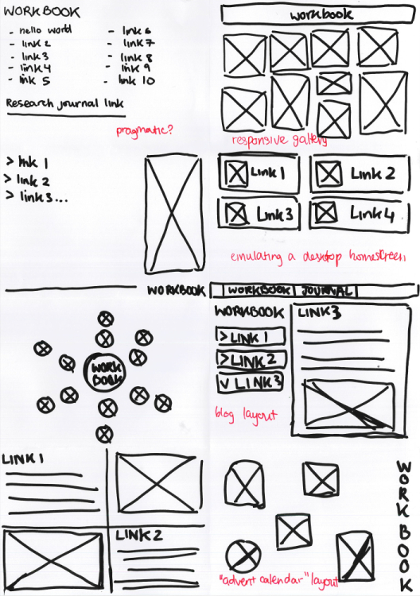
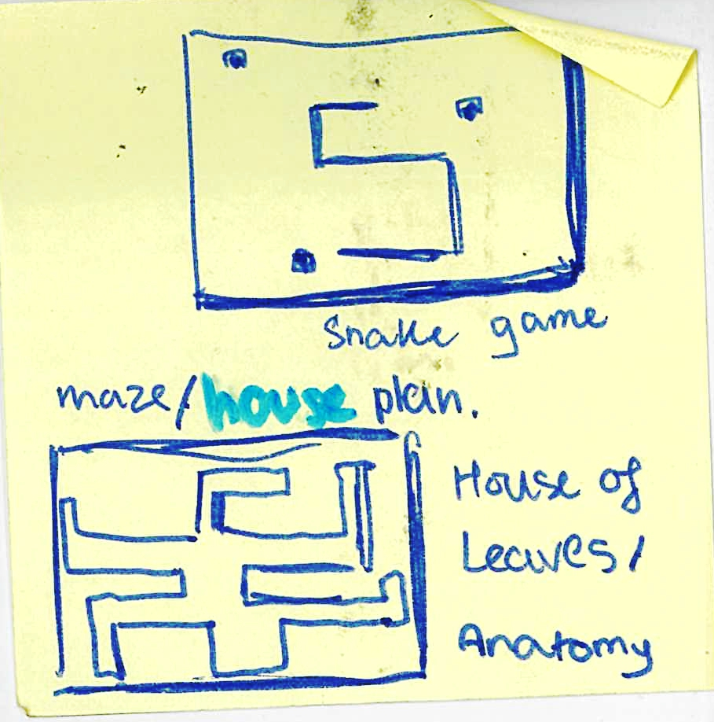
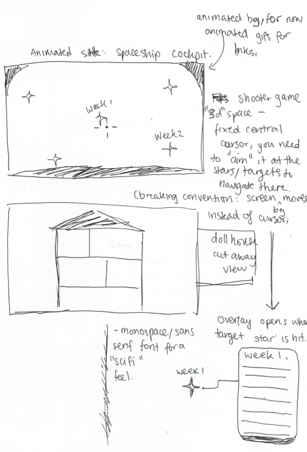
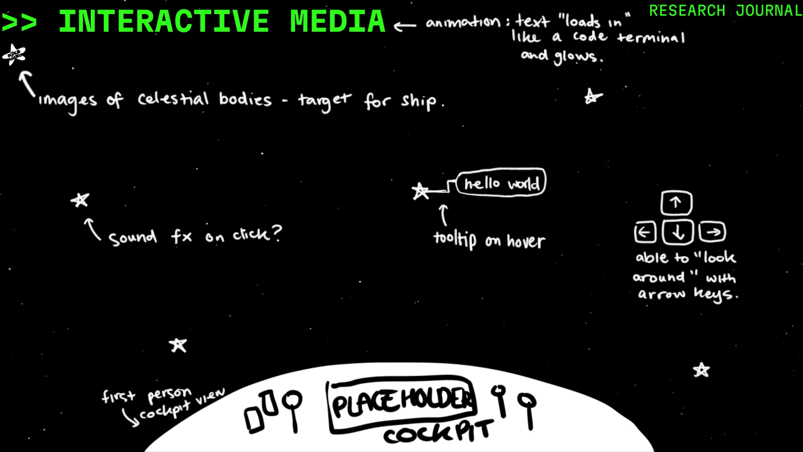

To sketch prototypes for this workbook, I followed the "crazy eights" ideation method, which involved sketching eight ideas in eight minutes. However, I did not realise that this workbook would be developed into a fully interactive website and that mobile compatibility was not a primary concern, so my initial sketches were relatively simple static pages.
 After deciding to prioritize desktop views, I followed with sketches of website ideas with other interactive components, largely based on simple video games (such as Snake or a basic shooter). I decided to further develop of the concept of a space-themed shooter where different targets were different links, as I felt it was feasible to implement. Although my focus at this point would be creating the basic static site, some additional features I had in mind were keyboard controls to "move" the viewport around (by moving the positioning of images), sound effects and background animations. This would make the site more interactive.
 